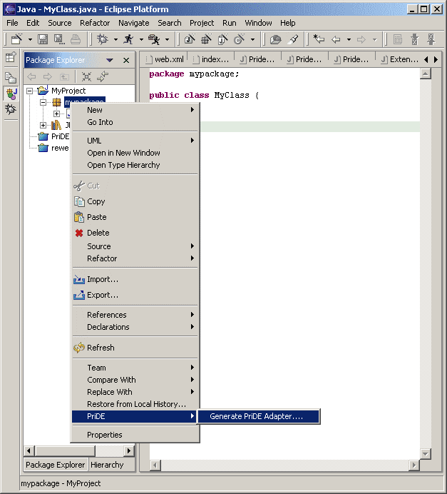
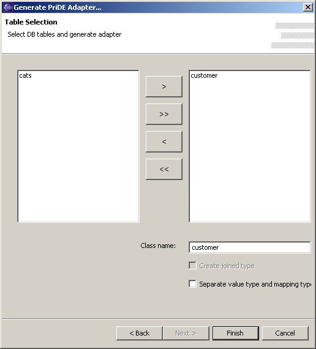

PriDE Eclipse Plugin
For users of the Eclipse 2.x development plattform, there is a plugin
available which allows to run PriDE's entity generator
in a convenient way from within the IDE. The plugin is distributed as a single
ZIP archive which has to be extracted in the Eclipse installation directory.
If Eclipse is already running, the IDE must be restarted.
After successful installation of the PriDE plugin, the context menu for
packages in a Java projects' package explorer provides a menu item for entity
generation as shown below:

Selecting the menu, brings up a wizard dialog for the specification of
database JDBC connection parameters.

The Next button will be enabled after having successfully tested
the specified database connection. In the second step, the database tables
have to be selected which the plugin should generate entities for. When selecting
a single database table, the input field Class name allows to specify
the name of the target class, otherwise the entity types have the same name
as the corresponding tables. When selecting multiple tables, the check mark
Create joined type allows to produce a single entity type, representing
a join of all selected tables. By default, the plugin creates hybrid types
as described in the introduction. A separation between mapping and value
type can be achieved by setting the appropriate check mark. In this case
the mappiung type's name is made up from appending the suffix DBA
to the name of the value type.

The actual generation is run by pressing the button Finish. The
entitiy types are created in the package from which the generator was invoked.
If an entity type already exists, it is overwritten if possible.